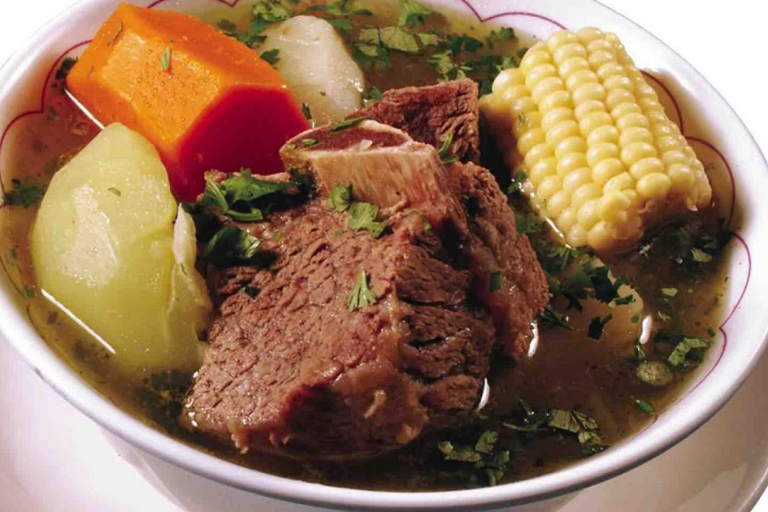

¿Qué es el "Caldo de Res"?
Caldo elaborado con carne de res con hueso, pescuezo e incluso cola, y diversas verduras, garbanzos o arroz. Puede ser translúcido o rojo cuando se condimenta con diferentes chiles. El comensal añade a su gusto jugo de limón, sal, cebolla y cilantro. Por lo general es un plato principal de las comidas caseras del mediodía y suele venderse en puestos del mercado. De él deriva el puchero o cocido.
Ingredientes para el "Caldo de Res":
- 12 tazas de agua.
- 2 lbs de trozos de res con hueso.
- 1 cabeza de ajo.
- 2 hojas de laurel.
- 2 a 3 cucharadas de sal.
- 4 papas blancas cortadas en cubos de una pulgada.
- 3 chiles serranos cortados en trozos.
- 1 cebolla blanca pequeña cortada en cubos.
- 4 zanahorias cortadas gruesas.
- 3 elotes cortados en 9 trozos.
- 4 tazas de repollo verde cortado en trozos de una pulgada.
- 1/2 taza de cilantro picado.
- 16 tortillas de maíz, si las deseas.
- 1 lima grande cortada en gajos, si la deseas.

Preparacion:
- En una olla grande y pesada, vierte las 10 tazas de agua, la carne de res, el ajo, las hojas de laurel y 1 1/2 cucharada de sal. Cocina hasta hervir, retirando la espuma de la parte superior, si es necesario. Tapa la olla, baja el fuego y continúa cocinando entre 1 1/2 hora y 2 horas o hasta que la carne esté blanda.
- En la licuadora, agrega los chiles serranos, 1/2 cucharadita de sal y 1/4 taza de agua, licúa hasta que esté todo bien mezclado y reserva.
- Una vez que la carne esté blanda, retira las hojas de laurel y la cabeza de ajo. Agrega las papas en la olla, además de las cebollas, las zanahorias y los elotes. Añade las 2 tazas de agua restantes, prueba el caldo para determinar si tiene suficiente sal y condimenta a gusto. Deja que hierva, luego baja el fuego y continúa cocinando hasta que las papas estén tiernas cuando las pruebes con un tenedor.
- Cuando las papas estén tiernas, retira los elotes y la carne de la sopa, transfiere a un recipiente grande y tapa para mantener todo caliente.
- Agrega el repollo y 1/4 taza de cilantro a la sopa. Cocina durante otros 15 a 20 minutos, hasta que el repollo (col verde) esté tierno pero al dente. Retira la sopa del fuego y déjala reposar durante 15 minutos. Calienta las tortillas de maíz en un comal o sartén caliente y mantenlas tibias en un calentador de tortillas.
- Divide la sopa en 8 recipientes. Agrega el elote y un trozo de carne a cada recipiente. Decora con los gajos de lima, el cilantro y la salsa Serrano para agregar un toque picante.
- Puedes servir con tortillas de maíz tibias, si lo deseas.
Caja de comentarios